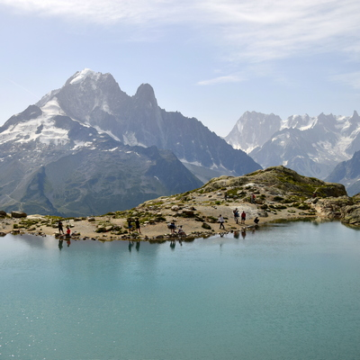
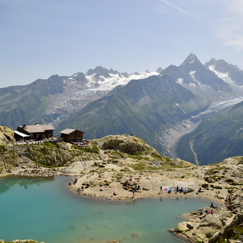

I spent just under a month in Italy - two weeks for an Australian winter (Italian summer) University subject; and the rest for travelling around.
The ruins in Rome are amazing, and the Vatican City is beautiful, but as the old saying goes, Rome doesn't need more than a day. I toured with a girl from Yale (going to Yale being the first thing she revealed about herself), and a guy I bumped to on the plane who happened to go to my Highschool!
Rome is definitely a must go at some stage in your travelling life, but no more than a whole day is needed to see the sights. A bit of a warning for budget travellers: hostels are scarce and typically don't have aircon because of the inability to modify the old heritage buildings.
Florence was located only a 30min train ride from Prato, where I would be attending classes. Prato is a small city outside of Florence with few tourist attractions, whereas Florence is a tourist hot spot with beautiful architecture and nice stores. Staying in Florence sounded like a good idea, and it did pay off at first, but living in a tourist hotspot wore off after a few days...
Great place to visit as a tourist, but I wouldnt' spend more than 5 days, which I would say is already pushing it... It probably doesn't need a second visit either.
Dolomites are a mountain range in north-east Italy. I was a bit sick of the city after a week in Florence, so I made the 4.5h trek via public transport to the mountain town of Belluno to visit the Tre Cime (three peaks), probably the most accessible but striking formation in the Dolomites. Tre Cime was another 2.5h to get to from Belluno. Took awhile, but I found it well worth it! The views of the Tre Cime were spectacular, and the small mountain town of Belluno was peaceful and beautiful. It's a bit of a trek to get out there, but I would strongly recommend a visit if you're a hiking/outdoorsy person. I just wish I had a car to drive around...
Here is a place you see a lot in pictures! Cinque terre means "five lands" and refers to the five towns that are located near each other on the coast. It's about 3.5h train ride from Florence, so would highly recommend a visit if you're in Florence. I scored a small cottage with a beautiful view of La Spezia.
It's a very popular place to visit, so I wasn't unique in my choice for the second weekend of my study trip. Most of the towns are accessible by train, but there's also a hiking route between them. Unfortunately it was summer when I did the hike, so I only made it to Manarola instead La Spezia.
The Tour du Mont Blanc is a popular 170km hiking tour around the Mont Blanc Massif in Europe. The route takes you through France, Italy, and Switzerland. It attracts tourists of all demographics: men and women, young and old, fit and not-so-fit, and I even saw a guy who was hiking with a missing arm! I wanted to do this beautiful but long hike because I wanted an exciting and challenging option to fill in my remaining week of holiday before I have to go back to normal University classes.
I took 10 days (9 nights) which is 1 less day than commonly recommended by guides. I started in Courmeyour, which is the main town in Italy which the hike passes. Most people start in Les Houches or Chamonix. I took public transport to get there - starting in Florence, to Milan by train, and then Courmeyour by coach. I used this book by Rev Reynold to plan my trip.
see this page for details on how I prepared and what to expect from the trip
Courmayeur is very well-signed, so it did'nt take long to find my start of the TMB. Almost immediately after I leave the town, I’m greeted by views of the massif, which remain in view for a short while before I enter forested areas. This day ended up being the hardest of the entire trip because I had minimal food and sleep in the 24 hours leading up to it (for various reasons).
After about 1.5h from Courmayeur, I arrived at Rifugio Bertone, took a break and had a beer in true European fashion. I took the harder route of the two the guidebook recommended, which offered better views, but man was it steep!
My stay at the Bonatti refuge was pretty comfortable. They served a four-course dinner with a salad entree, pasta, something made from zucchini, and some tart thing for dessert. I weirded out the dutch guys sitting next to me because of how much pasta I was eating. As I got up to get my third bowl of pasta, one of the guys asked me: “hey you know there’s another dish after this?”. I responded with a nervous laugh and “Yeah, I know”.
I left around 7:30am to start my 6.5h day of walking. Still ecstatic about starting the hike, I found everything was super beautiful. I especially loved having fat bumblebees collecting pollen accompanying me on the hike.
A few hours from Rifugio Bonatti is Col de Ferret (col = mountain pass). Crossing the Col was entry into Switzerland! After about an hour, I reached La Peule and paid €4.5 (just under $7 AUD) for a glass of lemonade, the most I've ever paid for a soft drink (thanks Switzerland).
The way from La Peule to La Fouly took around 1.5h and was absent of the amazing views offered earlier in the day. I passed some Swiss villages and walked along a river in a forested area. La Fouly turned out to be a small tourist town popular with locals.
My lunch was a macaroni and cheese with salad and it cost €28 (~$41 AUD). The cheapest items on the menu were a side salad or kids bowl of chips costing €8 (~$12 AUD) each... Ah Switzerland...
I stayed in a dorm at Hotel Edelweiss which I didn’t need a prior booking for. There I met a solo hiker from Sydney that was travelling in the opposite direction. For dinner, I just remember the soup entree was super nice, and they gave us some citrus-y mousse for dessert.
My body has yet to become conditioned to all the hiking, so I’m feeling pretty sore. Thankfully today is an easy day and shouldn't take a bit more than 4h. The track passed through villages which was quite nice because of the Swiss farmers tending to their cows, and the cute houses. For some reason there were heaps of carved wooden sculptures of animals that accompanied track signs.
Champex turned out to be a pretty large tourist town for the well-off Swiss. The passing-through hikers were vastly outnumbered by polo and summer-dress wearing families here for a relaxing holiday. I was hoping to stay at Arpette Hotel, a hotel about an hour up the more difficult variant track I planned to do. I learnt, from a call, that they were fully booked, so I had to do the extra hour in the morning :(.
I stayed at a chalet du Jardin Alpine (Literally: Chalet of the Alpine Gardens). It was a little house located in the middle of a small botanical garden in the south-western part of town. For dinner, I grabbed a pre-made tuna salad as well as supplied for tomorrow’s breakfast from the local grocery. I slept at 6pm to help recover from the soreness and tiredness.
I started the day early and feeling refreshed! I had a breakfast of 6 eggs, 6 slices of toast, and cherry tomatoes. I left around 7:00am to begin what was described to me as the hardest part of the whole trek. I took the variant track that goes for a consistent steep ascent for 3.5h climbing a vertical distance of 1.2km to an altitude of 2.6km above sea level. The descent was about 3h covering slightly less vertical distance.
Eventually I round a bend bringing the Fenetre d’Arpette into view. The track disappears and I navigated my way over boulders and rocks by following painted signs. It got very steep and hard. I would recommend only doing this variant if you have a decent level of fitness, balance, and coordination. Reaching the top, I’m rewarded with sick views.
The descent was long and constant. I wished that I had poles to use to save my knees. A couple hours after starting the descent, I reached the Chalet du Glacier and got a salad for lunch that tasted pretty awesome (loving Swiss food).
Departing from the chalet, I took a half-hour walk to Col de la Forclaz where there was a hotel with restaurant attached. I had a coffee and ice-cream before checking into the hotel (I didn’t book this one in advance). Dinner itself was alright. We started off with vegetable soup which was pretty good; then got chicken, veges, and chips; and finally ice-cream for dessert. During dinner I chatted with a trio of sisters form Melbourne. Before sleeping, I had a short chat with a Chinese guy who was completing the TMB in a trio.
The first half an hour of the hike goes back on what I covered yesterday until the Chalet du Glacier. I eventually made my first stop at Refuge les Grands. It’s a small hut type thing that only provides accommodation and refreshment. It was manned by a French-Swiss lady who I chatted with for a bit while I had a lemonade. 1.5h later, I approached the Col de Balme, which had a refuge manned by an old lady who couldn’t speak English and her grandkids. Passing the Col is France.
The guidebook offers a good and bad-weather alternatives. Although the lady from before warned me of bad weather, I decided to take the good-weather alternative along the high-route. The high-route took me under a series of ski-lifts and offered pretty good views of the valley below. Shortly after, I reached Col des Posettes before starting the ascent to Aiguillette des Posettes. After desending, I eventually got to Tre-le-Champ: A small town with only a handful of houses. I had booked in advance for a stay in the dorm room.
For dinner, I was chucked on a table with a french faily who didn’t speak any English. The dad could speak a little English. But I tried to interact with the family as well as I could non-verbally. The mum was doting and kept offering me food and asking me (in french) if I thought the food was good. The food itself was great. We started off with a simple mixed salad, and moved onto a penne carbonara. Dessert was unsweetened yoghurt – you’re supposed to add the sugar yourself.
I got up pretty early – way before breakfast time. I spent my time hanging out with the resident cat, who was very friendly and loved being pet. At breakfast, I shared a table with one of the people that was on my table for dinner last night. Turns out he’s from the Netherlands, can speak English, and is also a solo-traveler.
Today I was taking another variant route that goes up to Lac Blanc (Lake Blanc). The path turns into a series of ladders and metal steps hammered into the rock, which was good since my legs were cooked, and I could use my arms more.
I took a dip in Lac de Cheserys which precedes Lac Blanc by around 30mins. Lac Blanc intself was a beautiful torquiose and the water was freezing - probably because it originates from glaciel melt.
The descent to down from the lake to Refuge La Flegere shares the route from the cable-car from Chamonix to the lake. It was a little boring, but offered consistent views of the Mont Blanc Massif. At the refuge, I found it pretty cold, so I hung out inside while others seemed comfortable on the deck chairs outside
Everyone at dinner was French for some reason, with the exception of an American couple who were seated on their own in the dining hall. My whole table didn’t seem interested in talking with me :(.
Today I left early to skip the crowds. I was expecting about 6.5h of hiking. The track took me along the side of the mountain, through grassy fields and wooded areas. It had rained in the morning and the clouds gave the mountaiside a mysterious look. Large swathes of the mountainside had been converted to skii resorts.
A checkpoint for today was Col Brevent. I missed signage for the col and took a 2h round-trip detour and reached Col Cornu by accident! After finding my way back to Plan Praz and finding the correct track, I made a steep climb up to Col Brevent. My next stop was Le Brevent, about an hour away.
The trail was pretty fun. I had to navigate over and around rocks and climb ladders. I saw a pair of Ibex that let me get pretty close! Le Brevent is pretty touristy as there’s a cable-car station that ferry’s people to and from Chamonix. There’s a restaurant with wonderful views of the Mont Blanc Massif and that hangs over the cliff edge.
For lunch, I ate at the restaurant at Le Brevent. The English translation had steak in it, but it was sort of like raw beef patties mixed with some sort of salsa-like mixture. It was pretty odd, but tasted ok. The descent from Le Brevent was pretty brutal. About 1.6km decent down into Les Houches.
I got lost a couple times and took an hour longer to get to Les Houches. I arrived hungry, exhausted, and grumpy. I decided on Chalet-Refuge Michel Fagot for my accomodation, which was described as a low-cost accommodation option in the guidebook. At Chalet-Refuge, I ran into that guy from the Netherlands I met in Tre-le-Champ. We chatted until dinner.
We continued chatting through dinner, also joined by a Canadian couple. Dinner didn't feel like it was enough. This place was the first on my trip to have a stable internet connectino, so I stayed up late to do uni work (fun I know).
I started the morning petting the resident dog. Breakfast bread with spread. Not many options. I didn’t end up eating heaps. Today I planned on taking the high route alternative that goes through Col de Tricot. It’s pretty long and is expected to take 7.5h of hiking. Once I gained a bit of altitude I was given pretty good morning views of the valley.
About a kilometer from the Col de Tricot, I started to feel exhausted and struggle to reach the col. I got a view of the valley below where I could see my next stop – Refuge de Miage. The way down to the refuge was very windy and very steep. I really begun to feel exhausted. After about the first hundred meters down, I felt light-headed and breaked frequently. Eventually, I asked an older fella for water. The water made me feel well enough to get to the Refuge. I really needed food.
Once I got to the Refuge I immediately went to find a seat. I ordered a cider, a salad, and a mixed platter of cheese, potatoes, and cured meats. The waitress thought that I couldn’t eat it all. I immediately fell asleep after she took my order and was woken by a different waittress with my food. She looked confused when she realised the food was just for me. I continued onward after feeling much better from having food and and a nap.
After a short, but steep ascent, I reached Auberge du Truc, a family run refuge. The descent was along gravel roads and forested areas. Les Contamines had a long list of accommodation, so I didn’t bother booking any beforehand. I first tried Le Christiania Hotel because it had a sauna and spa. Unfortunately it was fully booked. The receptionist called around on my behalf to find accommodation. After a few calls, to much relief, she found a spot for me in Hotel la Clef des Champs.
I sat alone for dinner, so I spent it reading. Dinner was great though. Nice vegetable soup, grilled zucchini with garlic and crumbed chicken. I can’t remember what I had for dessert though. I made sure to eat heaps at dinner and have an early night to prevent a repeat of what happened at the Col de Tricot today.
Today's destination was originally intended to be Refuge Motet, about 8h from Les Contamines. But, it was full, so I instead reserved a spot in Rifugio Elisabetta, which is 11h away 😫. I made sure to start my day with heaps of food. In addition to the length of the climb, there was a significant amount of vertical distance to cover as well.
The start of the hike was not bad. It was mostly level which developed into some parts with steep inclines, but I didn’t struggle through them. The hike is pretty pleasant taking me through forested areas and passing a couple refuges. I took a break at Rifuge de la Balme and had a basic sandwich. Here I met the guy who gave me a sip of his water yesterday and we joke a around a bit. After my break, I make a comfortable ascent toward Col de la Croix, the point where the alternative track breaks away from the main track.
I didn’t take a break at the Col de la Croix like other were since it was pretty windy. I moved straight on toward Col de Fours. The ascent was pretty comfortable. The trail to Col de Fours had bits of snow along it. It was pretty hard and slippery, so not that great to play with. Once I reached Col de Fours, I decided to go to the peak about 40 minutes round-trip off the trail that others had recommended that I do.
I met up with an American guy shortly after the peak and descended down with him. We crossed the stream at the bottom of the valley and took a short walk to Rifugio Mortet, where I meat his crew of 3. I ordered a crepe and beer to sustain me for the last 3 hours of my journey to Rifugio Elisabetta.
Before reaching Rifugio Elisabetta, I had to cross the Col de la Seigne. A storm had started halfway up and continued to get rougher. Once I reached the Col de la Seigne, the wind got really strong.
The descent from Col de la Seigne was not bad. But then the rain got heavier. The lightning got closer. The rain then turned to hail. The lightning got even closer. I hid behind a rock formation so that I wouldn’t get pelted by the hail. I waited for the hail to stop before moving on. The rain however, continued and remained heavy. I power-walked the last hour to Elisabetta.
I arrived at Elisabetta at 7:15 and was absolutely soaked. I sat down for dinner with two brothers who could speak a bit of English. We chatted for a bit, but they’re English wasn’t great, and of course I don’t know any French, so conversation was quite limited. We had risotto (I had 3 bowls), corned beef with steamed veges, and some sort of pudding with mousse. The dorms were pretty weird. It was like 3 levels of bunk beds, but each mattress was laid next to each other with like 10 mattresses on each level. It was preeeetty weird. Thankfully I got a mattress with empty mattresses on either side.
I went to bed after having a short conversation with an American girl who was also travelling solo.
And here I am at the very last day of my trip! It’s a cruisy 5h with only a moderate ascent. I left early so I could get back to Courmayeur and catch the 1:30pm bus back to Milan.
I was alone on the trail for awhile. Although I did eventually get passed by a couple who were jogging. I made my way down to Lac Combal from the refuge. Thanks to morning sun, I got some wonderful shots.
The path directs me into the hills. It’s a comfortable ascent with the wind to keep me cool and the sun hidden behind the clouds. I reach the peak after an hour from Lac Combal. I had to take a shortcut down from the hills so I could catch the bus, although it meant I got crap views.
I ended up arriving in Courmayeur at about 12:00pm. I was grinning for the last half hour of the walk into Courmayeur, knowing that I would have completed the magnificent Tour du Mont Blanc 😁.
When I went to get my bus ticket, it turned out busses until 6:00pm were full, so I spent the rest of the afternoon wandering around and finding things to do or eat. I had a big pizza lunch and a lot of gelato.
Once 6pm rolled around, I hopped on the bus headed back to Milan.
Hiking has been a hobby of mine for the last couple years. Previously, I had restricted myself to day hikes in Victoria and whenever I went overseas (Japan is great for day hikes btw).
Doing the TMB was more or less an impulse decision. Although I made the decision quite a time ahead, I didn’t really put much thought into why I ought to do it. I just wanted to.
The TMB ended up being a way to challenge myself and extend the scope and depth of my hobby of hiking. By completing the TMB, I’ve broadened my hiking horizons to include multi-day hikes. Eventually, I want to get to fully self-sufficient camping and hiking.
The cool thing about the fact that the TMB is in Europe, is that I get to meet heaps of people that are very different from me and come from different backgrounds, but I have a medium of relating to them: through the love of hiking.
For the near future, I want to travel to Taiwan and New Zealand to cycle around both of these countries. New Zealand has some beautiful multi-day hikes that I would love to go on. Fitting these in is difficult, especially when most of my peers are focused on building the foundations of their career at this stage in our lives.